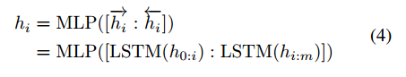

巨大的单向语言模型使用手动提示（one-shot, few-shot）有助于自然语言的理解，然而手工寻找最佳性能提升十分困难。提示工程意味着过度拟合测试集，创造对抗性提示容易导致性能大幅下降
P-tuning：在连续空间中自动搜索提示，利用少量连续自由参数作为提示，作为预训练语言模型的输入。使用梯度下降作为离散提示搜索的替代方案来优化连续提示。
P-tuning打破了GPT只能生成但不能理解的刻板印象，也是一种通用的方法，可用于微调预训练语言模型，以获得最佳的下游任务的性能。
大模型的可移植性很差，针对万亿规模的模型来说，对下游任务的微调很难起效果
P-tuning使用差分输出嵌入取代了预训练语言模型的输入嵌入。
P-tuning将$[P_i]$视为伪tokens，将模板映射到

其中$h_i$是可训练的嵌入张量，这样能够在语言模型的原始词汇之外找到更好的连续提示，利用下游损失函数$L$，可以对连续提示进行差分优化。


P-tuning的主要问题：
1、模型的原始词嵌入$e$是高度离散化的，如果$h$使用随机分布初始化，然后使用随机梯度下降（SGD）方式优化，已有文章验证了优化器容易陷入局部极小值
2、我们认为嵌入$h_i$是相互依赖相关联的，而不是独立的，需要引入一些机制使提示嵌入之间相互关联
解决方案：
使用由非常轻量级的神经网络构成的“提示编码器”将$h_i$建模成序列，在实际中，使用双向LSTM，带有ReLu激活的双层MLP用于鼓励离散性，语言模型的实际输入嵌入可以表示为：

现有的调优方法：
1、手工提示（manual prompt）
2、微调（fine-tuning）
3、手工微调提示（manual prompt with fine-tuning）
4、P-tuning：使用连续提示
P-tuning能够达到与fine-tuning效果相当的结果，P-tuning并没有改变预训练模型的模型参数，参数的微调可能会导致灾难性遗忘，P-tuning使通过找到更好的连续提示来唤起存储的知识
手动提示微小的更改将导致显著的性能差异，预训练语言模型对提示的选择十分敏感，在few-shot设置下选择最佳的手工提示是一个挑战，相比之下，P-tuning可以通过自动搜索的方式找到更好的提示。
P-Tuning在few-shot性能具有优势，能够自动搜索到较好的手工提示。
在推动难以微调的大规模预训练模型方面具有竞争潜力。
P-tuning可以使用anchor提示进一步改善性能，学习连续提示是有用的，优于离线提示搜索。